You type a robot task in plain English. A chain of NVIDIA Nemotron models turns it into a MuJoCo simulation, runs it, watches the video, and repairs the plan until the task succeeds. This page explains how it works, what has been built, and why each decision was made.
Each step has one job and hands a validated data structure to the next. The models only ever produce data (JSON checked against a schema). Our own code builds the scene, moves the robot, and decides pass or fail.
Reads the English task. Lists the objects, writes the success goals, and proposes web searches.
Searches the web for real sizes and masses. Nano pulls out the numbers and cites the page.
Places the objects and writes the motion plan: move, close gripper, lift, open.
Runs MuJoCo with the Franka Panda, records video, and checks each goal with fixed tolerances.
Looks at 8 frames of the video plus the measurements and explains why it failed.
Rewrites the scene and plan using the critique. The first repair uses Super; later ones escalate to Ultra.
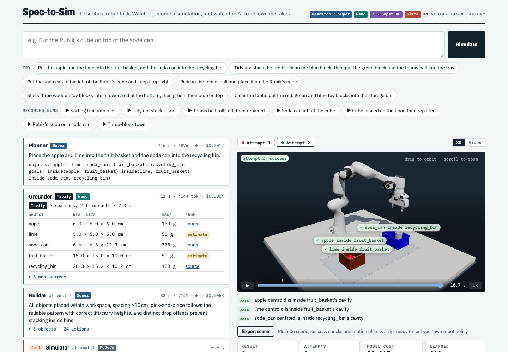
uv run uvicorn app.main:app, then open localhost:8000. Left: each step as it runs, with its model, time, tokens and cost. Right: the attempt in 3D (drag to orbit), a timeline with grasp and release markers, and the code's goal checks drawn over the objects at the end. Export scene downloads the scene, the success checks and the plan as a zip.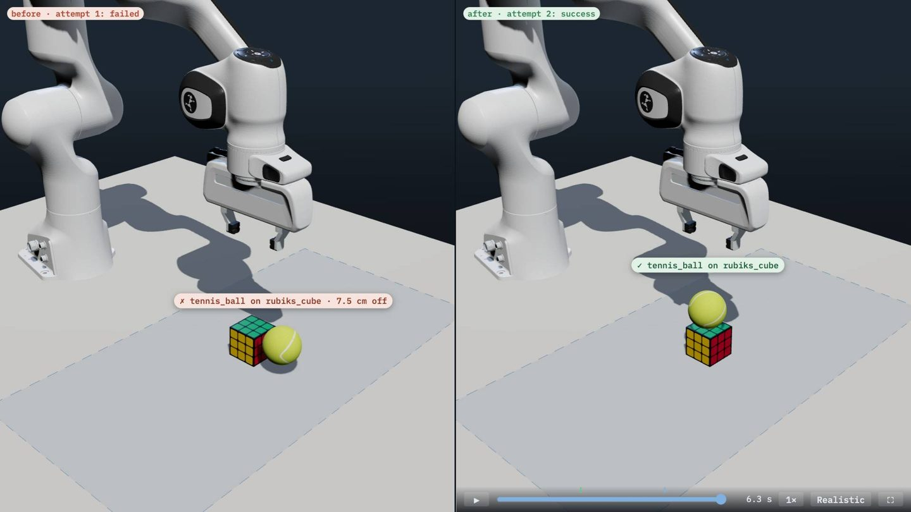
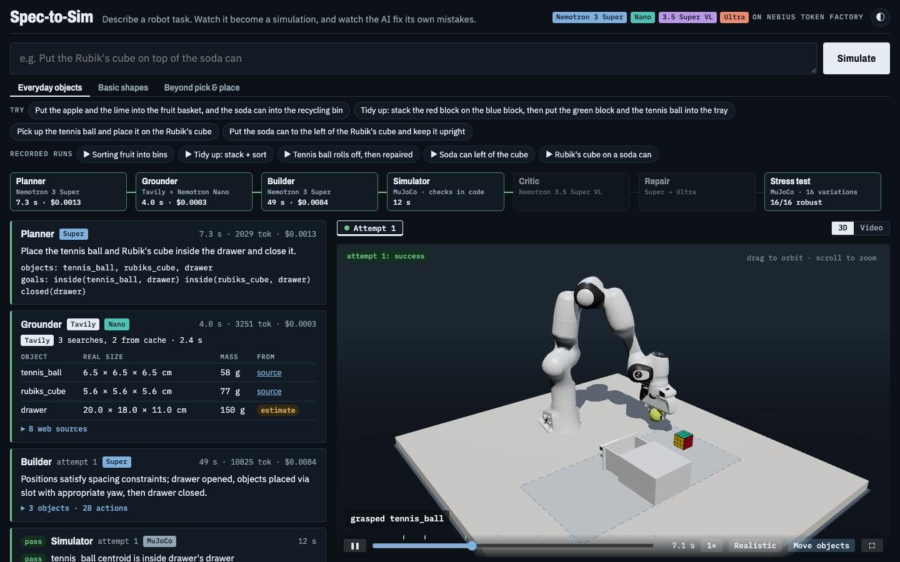
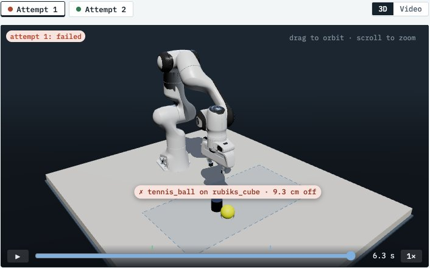
?run=20261028-093443-14f0&attempt=1.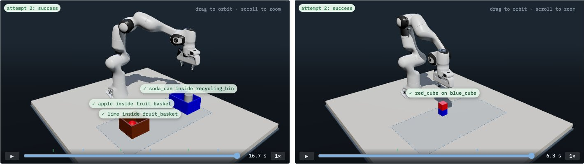
Seven recorded runs ship with the app (app/featured/), including fruit sorting and a mixed stack-and-sort, and replay instantly at no cost. Judges see a working example even if a model API is slow that day.
| Run | What happened | Result | Attempts | Model cost |
|---|---|---|---|---|
| “A Franka arm stacks the red cube on the blue cube” | Full pipeline, first try. Tavily found nothing useful for a generic cube, so Nano estimated the size and said so. | pass | 1 | $0.0023 |
| “Put the Rubik's cube on top of the soda can” | Tavily found the real cube size (5.6 cm) with a source link. Stacked within 0.1 cm of center. | pass | 1 | $0.0028 |
| “Pick up the tennis ball and place it on the Rubik's cube” | Ball size from the ITF approved-balls list (6.6 cm, 58 g). On attempt 1 the ball was released 1.6 cm above the cube and rolled off. Nothing was staged. Critic and Super repair fixed it. | fail → pass | 2 | $0.0089 |
| “Stack three wooden toy blocks into a tower…” | Two placements in one plan, 16 actions. Both levels centered within 0.1 cm. | pass | 1 | $0.0040 |
| Repair test (deliberately broken plan) | The plan released the cube 13 cm too high and 3 cm off-center. It fell and tipped over. The Critic said “dropped from too high”, Super repaired the plan, and attempt 2 stacked it. | fail → pass | 2 | $0.0030 |
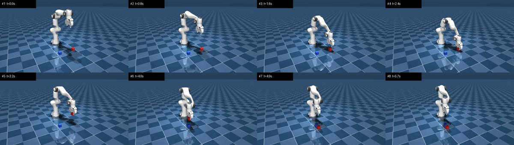
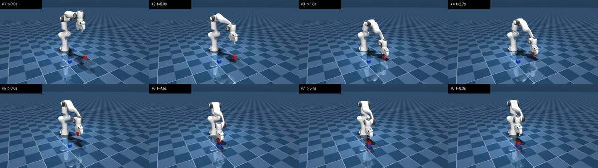
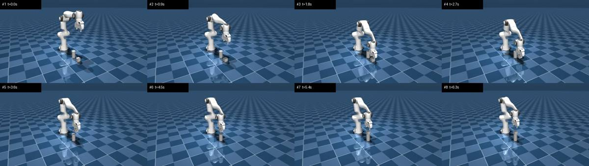
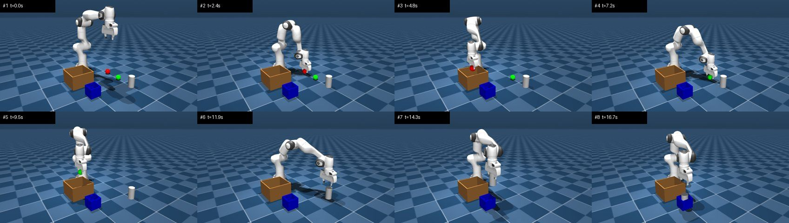
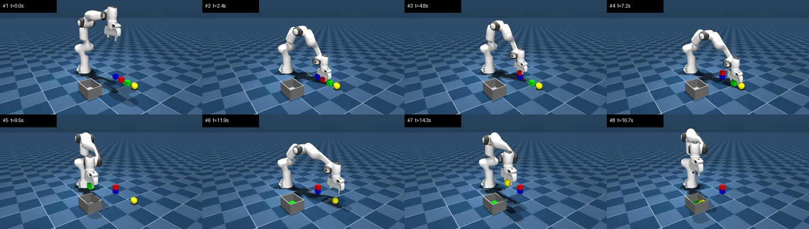
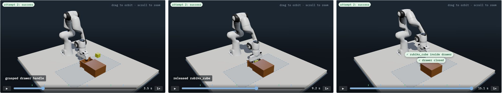
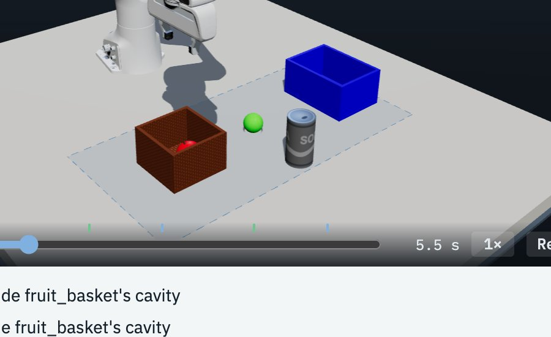
Full videos are in runs/ on your machine. Each attempt folder has run.mp4, the contact sheet and 8 single frames.
scripts/eval.py runs a fixed suite of 8 prompts through the whole pipeline and counts how many pass. Only the code checks decide pass or fail. Each round's failures were traced and fixed in code, not by retrying prompts until they passed. The same script will run on Nebius as a Serverless Job, with 3 repeats per prompt.
| Round | Passed | First try | Model cost | What the failures taught us |
|---|---|---|---|---|
| 1 | 4 / 8 | 3 / 8 | $0.20 | A goal placed inside the robot's base. IK failing inside the stated workspace. Web sizes that were nonsense (D25, D26). |
| 2 (hard only) | 2 / 3 | 2 / 3 | $0.06 | One scene problem found per attempt, wasting attempts (D27). |
| 3 | 8 / 8 | 3 / 8 | $0.17 | First-try misses: an invented “table” object (2 runs), a 10 cm bin for three blocks, the tennis ball rolling off. The first two are now fixed. |
| 4 (drawers, knock-over) | 2 / 3 | 1 / 3 | $0.09 | Cabinet placed out of reach, the placeholder name D.handle copied literally, two objects dropped on the same spot. |
| 5 (same 3, fixed) | 3 / 3 | 3 / 3 | $0.02 | All three passed on the first try. |
Per-prompt numbers are in docs/eval.md. One repeat per prompt is a small sample. The same prompt can pass first time in one run and need 3 attempts in the next.
Click a decision to see the reasoning and the alternative we turned down. New decisions are added at the bottom as the project moves.
on(A, B): A's bottom must be within 1.5 cm of B's top, A's center within half of B's width of B's center, and the gripper must have let go.json_schema response format, generated from our Pydantic classes. If the reply still fails validation, the error goes back to the model once.{"": ""}.evidence field. The prompt says sim events are ground truth, and the plan is shown as numbered steps.scripts/fetch_menagerie.sh downloads only the Panda folder from Menagerie at one fixed commit. The Dockerfile will run the same script..cache/spend.jsonl. Calls are refused once dev spend passes $20.runs/<id>/events.jsonl.?run=…) can be shared.scripts/try_repair.py as a test only.SPEC2SIM_SHADOWS=0). On the Mac and on a GPU they stay on.inside (object in a bin), left_of, right_of, in_front_of, behind and upright. New object shape: bin, an open-top container (floor plus four walls) fixed in place. Up to 6 objects and 30 s per task.object_in_container, object_left_of and so on. Our inside uses RoboLab's test: the object's center must lie inside the container's cavity, measured in the container's own frame. Using the same vocabulary makes our tasks comparable to theirs and lets us show sorting and tidying, not just stacking.docs/research/07-nvidia-physical-ai.md.inside goal points at a bin. The error goes back to the model for one retry. (2) If a placement goal already holds before the robot moves, the attempt fails with “objects must start away from their goal”."target': ", a broken fragment of JSON. NVIDIA's Isaac Lab-Arena lists invented names as its top failure mode with Nemotron Ultra too. (2) A repair once tried to “solve” the fruit task by starting the orange inside the basket.at goals must be at x 0.30–0.70 m and |y| ≤ 0.40 m, and within 0.78 m of the base. The limits are defined once and used by the Planner check, the Builder prompt and the scene check.scripts/add_viz.py), so the old runs got 3D replays with no model calls.task.json (real sizes with source links, plus the goals with their RoboLab names), plan.json, and a README with 4 lines of Python to load it next to the Menagerie Franka. (2) At the end of a replay, each goal appears as a ✓ or ✗ label on its object, with the measured error.DAILY_SPEND_LIMIT_USD (now $5), new runs are refused with a message pointing to the recorded runs, which replay for free. The $20 total cap for development stays. The app also starts without API keys, so replays work even if keys are missing.drawer: a fixed cabinet with a drawer on a sliding joint and a handle bar. The gripper grabs the handle, and plans use exact anchors: D.handle, D.open, D.closed and D.slot (where to drop things in). New goals: opened, closed, inside a drawer, and toppled for knocking things over with the closed gripper.lerobot 0.3.3. Its timestamp check caught frames 0.09 s apart instead of 0.1 s, which is fixed. Fruit sorting produced 20 of 20 successful episodes, 3,340 frames in 77 s.Comments at the end of a line broke the rules, so runs/ and .cache/ were never ignored. Videos and cached API results could have been committed.
Including the Panda XML from another file made MuJoCo look for meshes in the wrong folder. Loading the scene with MjSpec and attaching objects to it solved it.
The vision model spent its whole token budget on hidden reasoning. Fixed by turning reasoning off for that step (see D07).
The Grounder gave a soda can 14 g, the weight of an empty can. It is now told to assume objects are in their everyday state.
A false alarm: my check script never loaded .env. The key worked all along, and traces were arriving.
The brief said Thursday Oct 30. Oct 30, 2026 is a Friday, which you confirmed. Both docs are corrected.
Super spent its whole token budget reasoning and returned nothing, which ended the run with an error. It now retries without reasoning (D16).
The Planner sometimes asked for a ball to be both “lifted” and “on the cube”. It now uses “lifted” only when the task ends with the object in the air.
Normal arm lag of 2 cm was reported as a possible collision, which could mislead the Critic. The threshold is now 3.5 cm.
Searching “apple dimensions” returned Apple product pages, so the apple got iPhone numbers and the orange got AirPods specs (1.6 cm). Queries now name the kind of thing (“apple fruit”), and Nano ignores results about a different kind of object.
Grasp width was measured with a box formula, so a rolled 6.8 cm tennis ball counted as 11.4 cm and was refused. Spheres and cylinders now use their real shape.
A cube that rolled onto another face was reported as tipped 90°, even though it still sat flat. That would mislead the Critic. A box now counts as tipped only when no face points up.
Your prompt “stack three cubes in the drawer, then knock them over” exposed it: toppled compared against where an object started, so a cube that was stacked and then knocked down didn't count, and a cube that rolled onto another face did. It now uses the highest point the object rested at. The task itself is still too hard: the open part of the drawer is about 12 cm wide and the hand about 20 cm.
The Builder was told that yaw 0 closes the fingers along y. A drawer-handle grasp failed with "10 cm wide across the fingers", which exposed it: they close along x. Harmless for cubes and balls, so it went unnoticed for a day.
"Keep the cabinet in reach" and "leave room to pull the drawer 12 cm" allowed only x = 0.59 m, so the repairs went back and forth between the two errors for 4 attempts. Only the front of the cabinet needs to be reachable.
.env sets MUJOCO_GL=egl, which is invalid on a Mac. It only crashed scripts that imported MuJoCo before the scene module corrected it. The setting now lives in the package's start-up code, which always runs first.
While adding the daily cap, a text replacement made the budget check call itself forever, so starting any run crashed. A live test through the web API caught it before it shipped. There is now a unit test for the cap.
The fruit-sorting prompt passed on the first try once, then failed all 4 attempts on the next run (oversized bin, then a bin at the edge of reach). The cause was moved from prompts into code (D21). This is why the batch eval exists.
Found two: the tennis ball rolling off the Rubik's cube, and a cube set down on the floor. Both are recorded in the app. Live runs vary: the tennis ball failed in 2 of 3 runs.
One CLI run died during rendering while 4 ran at once in separate processes. Two at once in the web server works. The server's limit of 2 stays until this is understood.
Ultra has now run live several times: 15–96 s and $0.02–0.09 per repair. Once it wrote prose before its JSON, which is now handled (D24).
The Docker image renders correctly with OSMesa on Linux (tested natively on arm64). It was 4× too slow until shadows were turned off (D18).
Creating a container registry or endpoint fails with “PermissionDenied”, even as a dry run, while reading the account works. AI Cloud billing is most likely not activated (Token Factory credit is separate). The commands are ready in deploy/nebius/README.md.
No. The GPU was for server-side video rendering, which the browser 3D replay replaced. A GPU would only pay off for thousands of parallel stress-test runs (MuJoCo Warp / NVIDIA Newton), a self-hosted Cosmos Reason critic, or training policies. Those are future work in the README, not hackathon scope.
A 2 vCPU / 8 GB Nebius endpoint is about $0.07 an hour, or about $75 to Dec 15. Since D28, 2 vCPU is plenty. To decide at the end: free hosting (Hugging Face Spaces or Cloud Run) for the long-lived link, with Nebius for the eval Job. Model spend is capped at $5 a day (D30).
Fast with reasoning off (about 3 s), but the first call of a session once took 35 s. A slow first call needs a waiting state in the UI.
scripts/eval.py), first local run